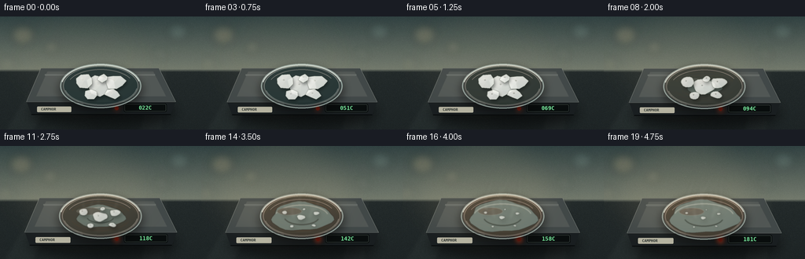
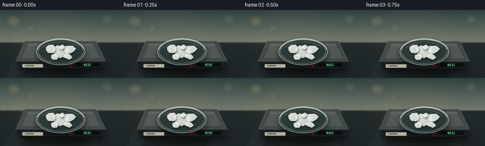
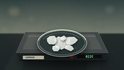
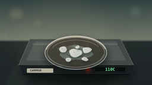
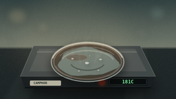

CODING AGENTS AS PIXEL WORLD MODELS
traex/DeepSeek-V4.1-Flash · phygen_119
点击播放 · 原生 RGB 像素
逐轮保存的候选
回放视频、检查图与代码变化。
每份候选均可单独播放。实际图片检查记录在下方工具轨迹中。
候选 01播放与检查图
点击播放 · 原生 RGB 像素


展开代码变化
--- 上一保存版本
+++ 本次保存版本
@@ -0,0 +1,446 @@
+from pathlib import Path
+
+import numpy as np
+from PIL import Image, ImageDraw, ImageFilter, ImageFont
+
+import artifact_io
+
+
+ROOT = Path(__file__).resolve().parent
+W, H = 256, 144
+SCALE = 4
+CW, CH = W * SCALE, H * SCALE
+FPS = 4
+FRAMES = 20
+
+
+def s(value):
+ return int(round(value * SCALE))
+
+
+def smoothstep(a, b, x):
+ x = np.clip((x - a) / (b - a), 0.0, 1.0)
+ return x * x * (3.0 - 2.0 * x)
+
+
+def radial_shape(cx, cy, radius, count, seed, squash=0.82, rotation=0.0):
+ rng = np.random.default_rng(seed)
+ points = []
+ for i in range(count):
+ angle = rotation + i * 2.0 * np.pi / count
+ rr = radius * rng.uniform(0.72, 1.18)
+ points.append(
+ (
+ cx + np.cos(angle) * rr,
+ cy + np.sin(angle) * rr * squash,
+ )
+ )
+ return points
+
+
+def chaikin(points, iterations):
+ pts = [(float(x), float(y)) for x, y in points]
+ for _ in range(iterations):
+ refined = []
+ for i, p in enumerate(pts):
+ q = pts[(i + 1) % len(pts)]
+ refined.append((0.75 * p[0] + 0.25 * q[0], 0.75 * p[1] + 0.25 * q[1]))
+ refined.append((0.25 * p[0] + 0.75 * q[0], 0.25 * p[1] + 0.75 * q[1]))
+ pts = refined
+ return pts
+
+
+def scaled_points(points, cx, cy, scale_x, scale_y=None):
+ if scale_y is None:
+ scale_y = scale_x
+ return [(cx + (x - cx) * scale_x, cy + (y - cy) * scale_y) for x, y in points]
+
+
+def high_points(points):
+ return [(s(x), s(y)) for x, y in points]
+
+
+def ellipse_box(cx, cy, rx, ry):
+ return (s(cx - rx), s(cy - ry), s(cx + rx), s(cy + ry))
+
+
+def rgba(color):
+ if len(color) == 3:
+ return (*color, 255)
+ return color
+
+
+def blend_color(a, b, amount):
+ return tuple(int(round(a[i] * (1.0 - amount) + b[i] * amount)) for i in range(3))
+
+
+def make_background():
+ y = np.linspace(0.0, 1.0, CH, dtype=np.float32)[:, None, None]
+ x = np.linspace(0.0, 1.0, CW, dtype=np.float32)[None, :, None]
+
+ wall_top = np.array([50, 67, 67], dtype=np.float32)
+ wall_mid = np.array([123, 130, 116], dtype=np.float32)
+ wall_bottom = np.array([73, 82, 78], dtype=np.float32)
+ wall_t = np.clip(y / 0.46, 0.0, 1.0)
+ wall = wall_top * (1.0 - wall_t) + wall_mid * wall_t
+ wall = wall * (1.0 - 0.14 * y) + wall_bottom * (0.14 * y)
+
+ counter = np.array([31, 38, 39], dtype=np.float32)
+ counter_hi = np.array([61, 68, 65], dtype=np.float32)
+ surface = counter + (counter_hi - counter) * (0.42 * (1.0 - y) + 0.15 * np.exp(-((x - 0.37) ** 2) / 0.035))
+ horizon = 0.465
+ mask = np.clip((y - horizon) / 0.025, 0.0, 1.0)
+ image = wall * (1.0 - mask) + surface * mask
+
+ rng = np.random.default_rng(119)
+ grain = rng.normal(0.0, 2.2, (CH // 2, CW // 2, 1)).astype(np.float32)
+ grain = np.repeat(np.repeat(grain, 2, axis=0), 2, axis=1)[:CH, :CW]
+ image = np.clip(image + grain, 0, 255).astype(np.uint8)
+ bg = Image.fromarray(image, "RGB").convert("RGBA")
+
+ bokeh = Image.new("RGBA", (CW, CH), (0, 0, 0, 0))
+ draw = ImageDraw.Draw(bokeh)
+ lights = [
+ (30, 24, 15, (255, 221, 162, 42)),
+ (66, 39, 9, (255, 233, 190, 34)),
+ (225, 20, 13, (177, 217, 207, 34)),
+ (203, 48, 8, (230, 241, 219, 25)),
+ (11, 60, 10, (238, 220, 175, 20)),
+ ]
+ for cx, cy, r, color in lights:
+ draw.ellipse(ellipse_box(cx, cy, r, r * 0.82), fill=color)
+ bokeh = bokeh.filter(ImageFilter.GaussianBlur(s(5.0)))
+ bg = Image.alpha_composite(bg, bokeh)
+
+ sheen = Image.new("RGBA", (CW, CH), (0, 0, 0, 0))
+ sd = ImageDraw.Draw(sheen)
+ sd.polygon(
+ high_points([(7, 144), (54, 67), (84, 67), (45, 144)]),
+ fill=(180, 191, 177, 11),
+ )
+ sd.polygon(
+ high_points([(176, 144), (198, 67), (212, 67), (206, 144)]),
+ fill=(211, 213, 193, 8),
+ )
+ sheen = sheen.filter(ImageFilter.GaussianBlur(s(2.5)))
+ bg = Image.alpha_composite(bg, sheen)
+
+ vignette = Image.new("L", (CW, CH), 0)
+ vd = ImageDraw.Draw(vignette)
+ vd.ellipse((s(-55), s(-44), s(311), s(190)), fill=210)
+ vignette = vignette.filter(ImageFilter.GaussianBlur(s(28)))
+ dark = Image.new("RGBA", (CW, CH), (4, 9, 10, 74))
+ dark.putalpha(Image.eval(vignette, lambda v: 74 - int(v * 74 / 255)))
+ bg = Image.alpha_composite(bg, dark)
+ return bg
+
+
+def draw_plate(base, heat):
+ shadow = Image.new("RGBA", (CW, CH), (0, 0, 0, 0))
+ sd = ImageDraw.Draw(shadow)
+ sd.ellipse(ellipse_box(130, 121, 92, 20), fill=(0, 0, 0, 145))
+ shadow = shadow.filter(ImageFilter.GaussianBlur(s(8)))
+ base.alpha_composite(shadow)
+
+ # Front body and top plate, both lightly rounded by the final downsampling.
+ body = Image.new("RGBA", (CW, CH), (0, 0, 0, 0))
+ bd = ImageDraw.Draw(body)
+ top = [(53, 66), (201, 66), (222, 108), (35, 108)]
+ front = [(35, 108), (222, 108), (216, 124), (41, 124)]
+ bd.polygon(high_points(front), fill=(25, 30, 32, 255))
+ bd.line(high_points([(41, 124), (216, 124)]), fill=(7, 10, 11, 230), width=s(1.2))
+ bd.polygon(high_points(top), fill=(62, 69, 69, 255))
+ bd.line(high_points(top + [top[0]]), fill=(163, 169, 163, 210), width=s(1.1))
+
+ plate_top = Image.new("RGBA", (CW, CH), (0, 0, 0, 0))
+ td = ImageDraw.Draw(plate_top)
+ td.polygon(high_points(top), fill=(65, 72, 72, 255))
+ td.polygon(
+ high_points([(61, 70), (194, 70), (210, 101), (47, 101)]),
+ fill=(81, 87, 85, 255),
+ )
+ td.line(high_points([(58, 74), (196, 74)]), fill=(199, 203, 192, 55), width=s(1.5))
+ plate_top = plate_top.filter(ImageFilter.GaussianBlur(s(0.35)))
+ body = Image.alpha_composite(body, plate_top)
+ base.alpha_composite(body)
+
+ # Indicator light and display on the front edge.
+ ui = Image.new("RGBA", (CW, CH), (0, 0, 0, 0))
+ ud = ImageDraw.Draw(ui)
+ ud.rounded_rectangle((s(157), s(110), s(211), s(121)), radius=s(2.2), fill=(8, 12, 12, 245))
+ ud.rounded_rectangle((s(158), s(111), s(210), s(120)), radius=s(1.8), outline=(80, 93, 86, 180), width=s(0.5))
+ ud.ellipse(ellipse_box(148, 116, 2.6, 2.6), fill=(118, 28, 16, 255))
+ led_glow = Image.new("RGBA", (CW, CH), (0, 0, 0, 0))
+ gd = ImageDraw.Draw(led_glow)
+ gd.ellipse(ellipse_box(148, 116, 6.5, 6.5), fill=(255, 74, 30, int(38 + 75 * heat)))
+ led_glow = led_glow.filter(ImageFilter.GaussianBlur(s(2.8)))
+ ui = Image.alpha_composite(led_glow, ui)
+ base.alpha_composite(ui)
+
+
+def draw_coil(base, heat):
+ glow = Image.new("RGBA", (CW, CH), (0, 0, 0, 0))
+ gd = ImageDraw.Draw(glow)
+ core = Image.new("RGBA", (CW, CH), (0, 0, 0, 0))
+ cd = ImageDraw.Draw(core)
+ for radius, width, alpha in [(38, 1.5, 52), (30, 1.2, 46), (22, 1.0, 40)]:
+ box = ellipse_box(128, 88, radius, radius * 0.49)
+ gd.arc(box, 202, 339, fill=(255, 77, 18, int(alpha * heat)), width=s(width * 3.4))
+ gd.arc(box, 22, 159, fill=(255, 91, 24, int(alpha * 0.8 * heat)), width=s(width * 3.4))
+ cd.arc(box, 202, 339, fill=(255, 119, 45, int(160 * heat)), width=s(width))
+ cd.arc(box, 22, 159, fill=(255, 102, 38, int(120 * heat)), width=s(width))
+ glow = glow.filter(ImageFilter.GaussianBlur(s(3.5)))
+ base.alpha_composite(glow)
+ base.alpha_composite(core)
+
+
+def draw_dish(base):
+ shadow = Image.new("RGBA", (CW, CH), (0, 0, 0, 0))
+ sd = ImageDraw.Draw(shadow)
+ sd.ellipse(ellipse_box(128, 93, 54, 30), fill=(0, 0, 0, 100))
+ shadow = shadow.filter(ImageFilter.GaussianBlur(s(4.5)))
+ base.alpha_composite(shadow)
+
+ dish = Image.new("RGBA", (CW, CH), (0, 0, 0, 0))
+ dd = ImageDraw.Draw(dish)
+ dd.ellipse(ellipse_box(128, 88, 51, 28), fill=(82, 107, 107, 50), outline=(188, 208, 201, 170), width=s(1.4))
+ dd.ellipse(ellipse_box(128, 88, 47, 25), fill=(36, 53, 53, 220), outline=(218, 230, 221, 105), width=s(0.8))
+ dd.arc(ellipse_box(128, 88, 50, 27), 191, 347, fill=(238, 247, 237, 190), width=s(1.4))
+ dd.arc(ellipse_box(128, 88, 46, 24), 8, 166, fill=(170, 191, 185, 105), width=s(1.0))
+ dd.arc(ellipse_box(128, 88, 42, 21), 203, 332, fill=(242, 249, 238, 65), width=s(1.0))
+ dd.line(high_points([(92, 108), (106, 111)]), fill=(224, 235, 225, 105), width=s(0.8))
+ base.alpha_composite(dish)
+
+
+CRYSTALS = [
+ (127, 88, 16.5, 9, 101, 0.18),
+ (107, 82, 11.5, 8, 202, -0.35),
+ (146, 83, 12.8, 8, 303, 0.64),
+ (116, 99, 9.3, 7, 404, 1.14),
+ (143, 98, 8.6, 7, 505, 0.33),
+ (131, 78, 7.2, 6, 606, 1.72),
+]
+
+
+def draw_pool(base, t):
+ growth = smoothstep(0.12, 0.94, t)
+ if growth <= 0.01:
+ return
+ layer = Image.new("RGBA", (CW, CH), (0, 0, 0, 0))
+ ld = ImageDraw.Draw(layer)
+ center = (128.0, 88.5)
+ rx = 12.0 + 30.0 * growth
+ ry = 5.5 + 14.5 * growth
+ points = []
+ count = 30
+ for i in range(count):
+ angle = 2.0 * np.pi * i / count
+ wobble = 1.0 + 0.07 * np.sin(3.0 * angle + 0.7) + 0.035 * np.sin(7.0 * angle)
+ points.append(
+ (
+ center[0] + rx * wobble * np.cos(angle),
+ center[1] + ry * wobble * np.sin(angle),
+ )
+ )
+ ld.polygon(high_points(points), fill=(126, 148, 142, int(105 + 72 * growth)))
+ ld.arc(ellipse_box(center[0], center[1], rx * 0.88, ry * 0.82), 196, 346, fill=(229, 238, 226, int(100 + 65 * growth)), width=s(1.1))
+ ld.arc(ellipse_box(center[0], center[1], rx * 0.58, ry * 0.58), 18, 164, fill=(45, 68, 66, int(70 + 45 * growth)), width=s(0.9))
+ ld.ellipse(ellipse_box(113, 82, 15, 4.5), fill=(232, 241, 228, int(22 + 28 * growth)))
+ layer = layer.filter(ImageFilter.GaussianBlur(s(0.45)))
+ base.alpha_composite(layer)
+
+
+def draw_crystal(base, spec, t, index):
+ cx, cy, radius, count, seed, rotation = spec
+ melt = smoothstep(0.18, 0.92, t)
+ shrink = 1.0 - 0.82 * melt
+ points = radial_shape(cx, cy, radius * shrink, count, seed, 0.76, rotation)
+ points = scaled_points(points, cx, cy, 1.0, 1.0 - 0.18 * melt)
+ points = chaikin(points, int(round(2.4 * melt)))
+ center_y = cy + 1.6 * melt
+ points = [(x, y + (center_y - cy)) for x, y in points]
+
+ shadow = Image.new("RGBA", (CW, CH), (0, 0, 0, 0))
+ sd = ImageDraw.Draw(shadow)
+ sh = [(x + 1.6, y + 2.6) for x, y in points]
+ sd.polygon(high_points(sh), fill=(4, 14, 14, int(115 * (1.0 - 0.35 * melt))))
+ shadow = shadow.filter(ImageFilter.GaussianBlur(s(1.8 + melt)))
+ base.alpha_composite(shadow)
+
+ crystal = Image.new("RGBA", (CW, CH), (0, 0, 0, 0))
+ cd = ImageDraw.Draw(crystal)
+ base_alpha = int(245 - 60 * melt)
+ cd.polygon(high_points(points), fill=(220, 231, 227, base_alpha))
+
+ # Faceted interior. Lighting remains fixed while the crystals soften.
+ center = (cx, center_y)
+ for i, p in enumerate(points):
+ q = points[(i + 1) % len(points)]
+ angle = np.arctan2((p[1] + q[1]) * 0.5 - center_y, (p[0] + q[0]) * 0.5 - cx)
+ light = 0.5 + 0.5 * np.cos(angle + 2.35)
+ shade = 0.72 + 0.28 * light
+ color = (
+ int(199 + 54 * shade),
+ int(211 + 43 * shade),
+ int(207 + 43 * shade),
+ int((218 - 48 * melt)),
+ )
+ cd.polygon(high_points([center, p, q]), fill=color)
+
+ outline_alpha = int(205 - 95 * melt)
+ cd.line(high_points(points + [points[0]]), fill=(243, 249, 240, outline_alpha), width=s(max(0.55, 1.0 - 0.35 * melt)))
+ glint = [(cx - radius * 0.34 * shrink, center_y - radius * 0.30 * shrink), (cx - radius * 0.15 * shrink, center_y - radius * 0.38 * shrink)]
+ cd.line(high_points(glint), fill=(255, 255, 248, int(225 - 100 * melt)), width=s(1.3))
+ if t < 0.68:
+ gx = cx - radius * 0.15 * shrink + 0.4 * np.sin(index + 2.0 * np.pi * t)
+ gy = center_y - radius * 0.14 * shrink
+ cd.ellipse(ellipse_box(gx, gy, max(0.7, 1.15 * shrink), max(0.55, 0.8 * shrink)), fill=(255, 255, 247, int(210 - 190 * t)))
+ crystal = crystal.filter(ImageFilter.GaussianBlur(s(0.18 + 0.35 * melt)))
+ base.alpha_composite(crystal)
+
+
+def bezier(points, samples=26):
+ pts = np.asarray(points, dtype=np.float32)
+ out = []
+ for i in range(samples):
+ t = i / (samples - 1)
+ p = ((1 - t) ** 3) * pts[0] + 3 * ((1 - t) ** 2) * t * pts[1] + 3 * (1 - t) * t * t * pts[2] + t**3 * pts[3]
+ out.append(tuple(p))
+ return out
+
+
+def draw_vapor(base, t, frame_index):
+ vapor_strength = smoothstep(0.28, 0.55, t) * (0.58 + 0.42 * smoothstep(0.55, 1.0, t))
+ if vapor_strength <= 0.01:
+ return
+ layer = Image.new("RGBA", (CW, CH), (0, 0, 0, 0))
+ ld = ImageDraw.Draw(layer)
+ rng = np.random.default_rng(800 + frame_index)
+ wisps = [
+ (110, 82, 99, 67, 119, 53, 117, 29),
+ (127, 78, 119, 56, 142, 50, 138, 22),
+ (143, 82, 157, 66, 140, 48, 158, 30),
+ (119, 91, 109, 71, 131, 56, 124, 39),
+ (137, 91, 148, 72, 126, 58, 145, 42),
+ ]
+ count = int(2 + round(4 * smoothstep(0.3, 0.85, t)))
+ for idx in range(count):
+ p = list(wisps[idx % len(wisps)])
+ drift = 1.4 * np.sin(2.0 * np.pi * (t * 1.7 + idx * 0.23))
+ for j in range(1, 7, 2):
+ p[j] += drift * (j / 7.0)
+ path = bezier(
+ [
+ (p[0], p[1]),
+ (p[2], p[3]),
+ (p[4], p[5]),
+ (p[6], p[7]),
+ ],
+ samples=28,
+ )
+ for k in range(len(path) - 1):
+ progress = k / (len(path) - 1)
+ alpha = int(vapor_strength * (34 - 22 * progress) * rng.uniform(0.72, 1.08))
+ width = max(1.0, 4.8 - 2.8 * progress)
+ ld.line(
+ [high_points([path[k]])[0], high_points([path[k + 1]])[0]],
+ fill=(229, 240, 233, max(0, alpha)),
+ width=s(width),
+ )
+ layer = layer.filter(ImageFilter.GaussianBlur(s(2.0)))
+ base.alpha_composite(layer)
+
+
+def draw_heat_glow(base, t):
+ strength = smoothstep(0.15, 0.88, t)
+ if strength <= 0.01:
+ return
+ layer = Image.new("RGBA", (CW, CH), (0, 0, 0, 0))
+ ld = ImageDraw.Draw(layer)
+ ld.ellipse(ellipse_box(128, 87, 50, 27), fill=(255, 108, 35, int(10 + 23 * strength)))
+ ld.arc(ellipse_box(128, 88, 47, 25), 188, 351, fill=(255, 166, 77, int(20 + 45 * strength)), width=s(1.2))
+ layer = layer.filter(ImageFilter.GaussianBlur(s(1.7)))
+ base.alpha_composite(layer)
+
+
+def draw_temperature(base, t, frame_index):
+ temp = int(round(22 + 159 * (t**0.92)))
+ text = f"{temp:03d}C"
+ screen = Image.new("RGBA", (CW, CH), (0, 0, 0, 0))
+ sd = ImageDraw.Draw(screen)
+ font_path = "/usr/share/fonts/truetype/dejavu/DejaVuSansMono-Bold.ttf"
+ try:
+ font = ImageFont.truetype(font_path, s(6.7))
+ except OSError:
+ font = ImageFont.load_default()
+ bbox = sd.textbbox((0, 0), text, font=font)
+ tw = bbox[2] - bbox[0]
+ th = bbox[3] - bbox[1]
+ tx = s(184) - tw // 2
+ ty = s(115.5) - th // 2 - bbox[1]
+ glow = Image.new("RGBA", (CW, CH), (0, 0, 0, 0))
+ gd = ImageDraw.Draw(glow)
+ gd.text((tx, ty), text, font=font, fill=(107, 255, 156, 110))
+ glow = glow.filter(ImageFilter.GaussianBlur(s(1.2)))
+ screen = Image.alpha_composite(screen, glow)
+ sd = ImageDraw.Draw(screen)
+ sd.text((tx, ty), text, font=font, fill=(133, 255, 172, 235))
+ base.alpha_composite(screen)
+
+
+def draw_label(base):
+ layer = Image.new("RGBA", (CW, CH), (0, 0, 0, 0))
+ ld = ImageDraw.Draw(layer)
+ ld.rounded_rectangle((s(48), s(114), s(91), s(121)), radius=s(1.2), fill=(223, 219, 195, 200))
+ font_path = "/usr/share/fonts/truetype/dejavu/DejaVuSansMono-Bold.ttf"
+ try:
+ font = ImageFont.truetype(font_path, s(4.4))
+ except OSError:
+ font = ImageFont.load_default()
+ ld.text((s(53), s(114.7)), "CAMPHOR", font=font, fill=(43, 49, 45, 220))
+ base.alpha_composite(layer)
+
+
+def render_frame(t, frame_index):
+ image = make_background()
+ heat = smoothstep(0.08, 0.93, t)
+ draw_plate(image, heat)
+ draw_coil(image, heat)
+ draw_dish(image)
+ draw_heat_glow(image, t)
+ draw_pool(image, t)
+
+ for index, spec in enumerate(CRYSTALS):
+ draw_crystal(image, spec, t, index)
+
+ draw_vapor(image, t, frame_index)
+
+ # A faint warm key light follows the heating phase.
+ light = Image.new("RGBA", (CW, CH), (0, 0, 0, 0))
+ ld = ImageDraw.Draw(light)
+ ld.ellipse(ellipse_box(105, 57, 94, 63), fill=(255, 218, 158, int(7 + 13 * heat)))
+ light = light.filter(ImageFilter.GaussianBlur(s(18)))
+ image = Image.alpha_composite(image, light)
+ draw_temperature(image, t, frame_index)
+ draw_label(image)
+
+ # Slow, subtle push-in and camera drift make the timelapse feel photographed.
+ zoom = 1.012 + 0.035 * t
+ shifted = image.resize((s(W * zoom), s(H * zoom)), Image.Resampling.LANCZOS)
+ left = max(0, (shifted.width - CW) // 2 + int(s(0.8 * t)))
+ top = max(0, (shifted.height - CH) // 2 - int(s(1.0 * t)))
+ left = min(left, shifted.width - CW)
+ top = min(top, shifted.height - CH)
+ shifted = shifted.crop((left, top, left + CW, top + CH))
+ final = shifted.convert("RGB").resize((W, H), Image.Resampling.LANCZOS)
+ return np.asarray(final, dtype=np.uint8)
+
+
+def main():
+ frames = [render_frame(i / (FRAMES - 1), i) for i in range(FRAMES)]
+ artifact_io.save(frames, ROOT)
+ print(f"wrote {len(frames)} frames to {ROOT}")
+
+
+if __name__ == "__main__":
+ main()
候选 02播放与检查图
点击播放 · 原生 RGB 像素

展开代码变化
--- 上一保存版本
+++ 本次保存版本
@@ -96,7 +96,7 @@
grain = rng.normal(0.0, 2.2, (CH // 2, CW // 2, 1)).astype(np.float32)
grain = np.repeat(np.repeat(grain, 2, axis=0), 2, axis=1)[:CH, :CW]
image = np.clip(image + grain, 0, 255).astype(np.uint8)
- bg = Image.fromarray(image, "RGB").convert("RGBA")
+ bg = Image.fromarray(image.astype(np.uint8)).convert("RGBA")
bokeh = Image.new("RGBA", (CW, CH), (0, 0, 0, 0))
draw = ImageDraw.Draw(bokeh)
可观测工具轨迹
实际执行的命令与返回图片。
命令 1exit 0
/bin/bash -c "pwd && rg --files -g 'prompt.txt' -g 'GENERATION_RULES.md' -g 'task_spec.json' -g '"'!*.mp4'"' -g '"'!*.webm'"'"
命令 2exit 0
/bin/bash -c "git status --short && find . -maxdepth 2 -type f | sort | sed -n '1,160p'"
命令 3exit 0
/bin/bash -c 'cat prompt.txt'
命令 4exit 0
/bin/bash -c 'cat GENERATION_RULES.md'
命令 5exit 0
/bin/bash -c 'cat task_spec.json'
命令 6exit 0
/bin/bash -c "sed -n '1,240p' artifact_io.py && printf '\\n--- player ---\\n' && sed -n '1,220p' player_template.html"
命令 7exit 0
/bin/bash -c 'python generate.py'
命令 8exit 0
/bin/bash -c 'command -v magick || command -v convert || true'
命令 9exit 0
/bin/bash -c "command -v ffmpeg || true; python - <<'PY'
from PIL import Image
im=Image.open('frames/00.png')
print(im.size, im.mode)
PY"命令 10exit 0
/bin/bash -c 'ls -lh frames/00.png frames/19.png pixels.npz inspection.png index.html && du -sh frames pixels.npz index.html'
命令 11exit 0
/bin/bash -c "python - <<'PY'
import json
from pathlib import Path
p=Path('task_spec.json')
s=json.loads(p.read_text())
print(s)
PY"命令 12exit 0
/bin/bash -c 'python generate.py'
命令 13exit 0
/bin/bash -c "python - <<'PY'
from pathlib import Path
import json, numpy as np
from PIL import Image
spec=json.loads(Path('task_spec.json').read_text())
frames=sorted(Path('frames').glob('*.png'))
assert len(frames)==spec['frames'], len(frames)
imgs=[np.asarray(Image.open(p).convert('RGB')) for p in frames]
assert all(a.shape==(spec['height'],spec['width'],3) for a in imgs)
d=[float(np.abs(imgs[i].astype(np.int16)-imgs[i-1].astype(np.int16)).mean()) for i in range(1,len(imgs))]
print('frames',len(imgs),'shape',imgs[0].shape,'range',imgs[0].min(),imgs[0].max())
print('mean adjacent deltas', [round(x,2) for x in d])
print('min/max delta',round(min(d),2),round(max(d),2))
print('artifacts', {p.name:p.stat().st_size for p in [Path('pixels.npz'),Path('inspection.png'),Path('transition_check.png'),Path('index.html')]})
PY"命令 14exit 0
/bin/bash -c "python - <<'PY'
from pathlib import Path
from PIL import Image
import numpy as np
p=Path('inspection.png')
im=Image.open(p)
print(im.size, im.mode, p.stat().st_size)
print('html ready token:', 'window.__pixelReady=true' in Path('index.html').read_text())
PY"视觉工具实际返回图片 1

视觉工具实际返回图片 2

视觉工具实际返回图片 3

视觉工具实际返回图片 4

视觉工具实际返回图片 5

保存候选 2 份；完成命令 14 次；可验证图片返回 5 张。原始 API 响应与完整日志保留在本地。